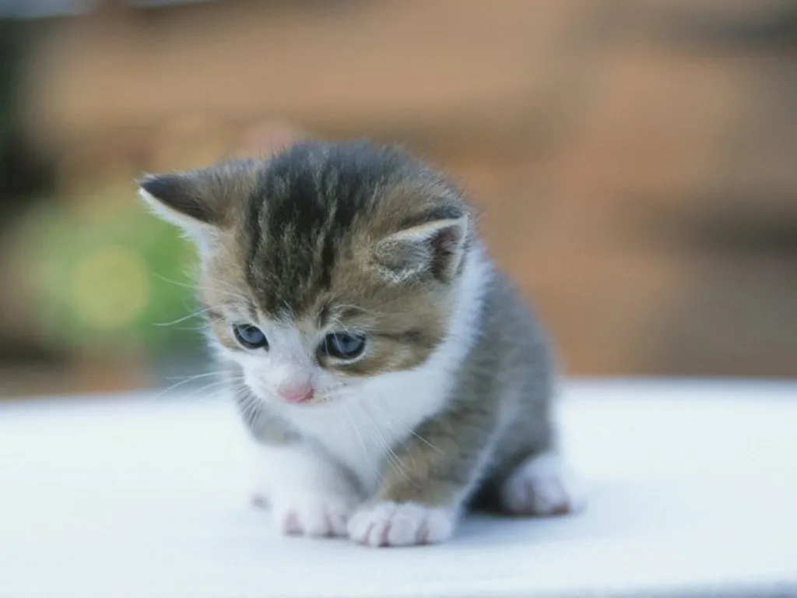

¿Por qué es importante adoptar una mascota? Varios estudios han demostrado que tener una mascota no solo alargará tu vida, sino que también aumentarán tu felicidad y mejorarán tu salud en general. Además, las mascotas ayudan a las personas con depresión, estrés y ansiedad.En la mayoría de los casos, adoptar significa darle una segunda oportunidad a un animal que ha sufrido un proceso de abandono, y en ocasiones maltrato. Acogerlo en tu casa de por vida y darle la estabilidad, los cuidados y el cariño que necesita va a ayudarlo a que recupere su confianza y su autoestima.
Para poder adoptar a uno de los caninos o felinos que han sido rescatados por nuestra Compañia, los solicitantes deberán llenar un formulario de adopción, el mismo que será analizado previa aprobación. Además, deberá adjuntar su copia de cédula, una planilla de servicios básicos para registro, una vez aprobado se realizará la entrega del canino o felino en el domicilio del adoptante y se realizará la entrega de un certificado de adopción.